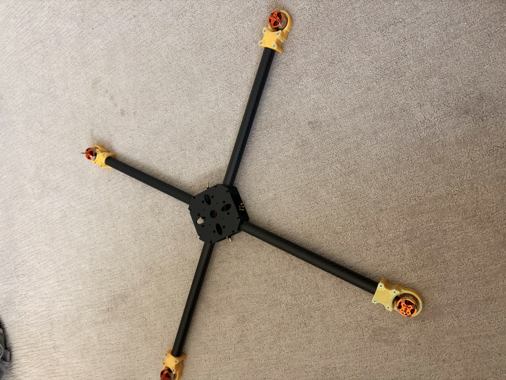
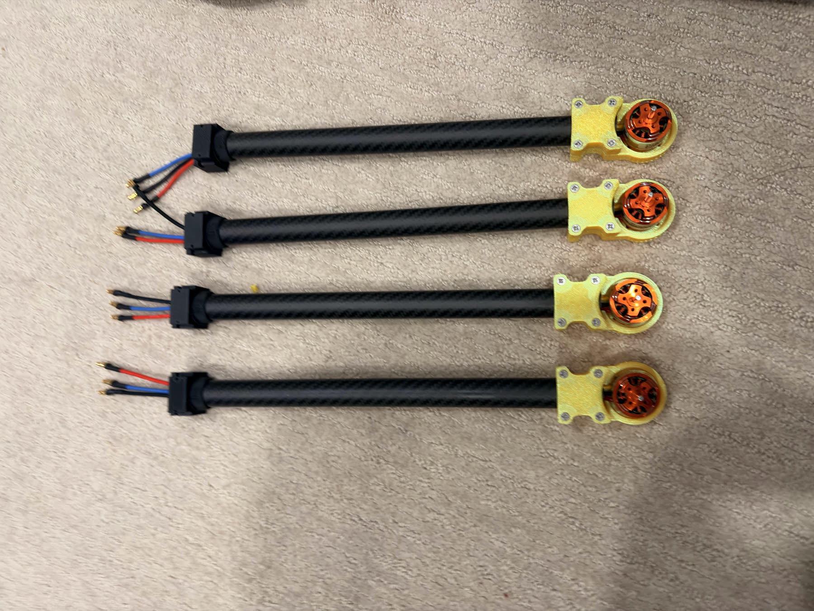
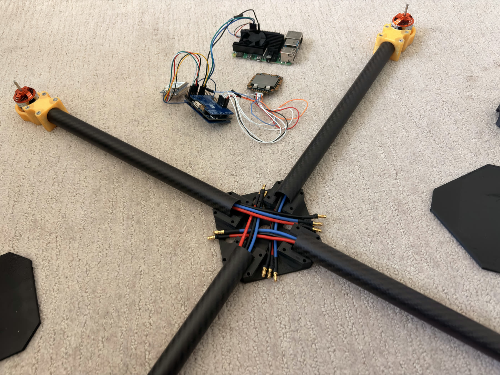
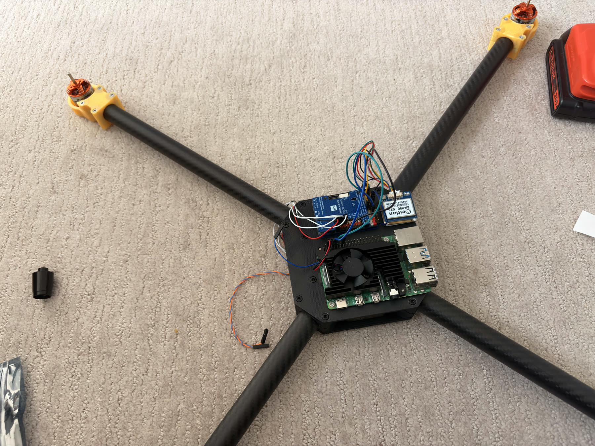
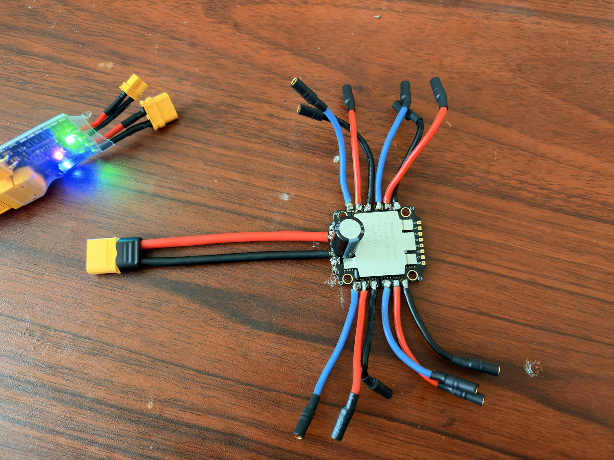

GPS quadcopter / MAVLink companion computer
Autonomous Drone Hardware Build
A sub-$450 carbon-fiber quadcopter platform built around ArduCopter, Raspberry Pi control, GPS navigation, and no-prop bench validation.
Build sequence
From arm assemblies to a powered center stack.
Each stage is documented with real build photos so the mechanical work, wiring, and bench checks are easy to audit.

01
Arm and motor assemblies
Carbon-fiber arms use yellow 3D-printed mounts with the brushless motors installed before final frame fitment.

02
Center hub routing
Motor phase leads are staged toward the middle of the frame before trimming, ESC connection, and strain relief.

03
Companion computer deck
The Raspberry Pi, Matek F405-Wing V2, and BN-880 GPS are staged together for GPS and MAVLink bench testing.

Electronics validation
Power checks before props ever go on.
The ESC and XT60 wiring are checked on the bench first. The layout keeps motor bullets visible, battery polarity obvious, and LiPo voltage readings available during early validation.
- VBAT and GND short check with a multimeter
- Motor phase connectors labeled before rotation testing
- Flight controller, GPS, and Pi powered without propellers
Current state
Frame dry-fit is complete; calibration and MAVLink integration are next.
Frame layout
Four-arm carbon frame, motor mounts, and center plate fitment are documented.
ESC bench wiring
XT60 input, motor bullets, and early battery checks are validated.
Companion stack
Pi, flight controller, GPS, and jumper wiring are mounted for MAVLink testing.
Calibration
Sensor calibration, motor direction checks, and first no-prop motor test.